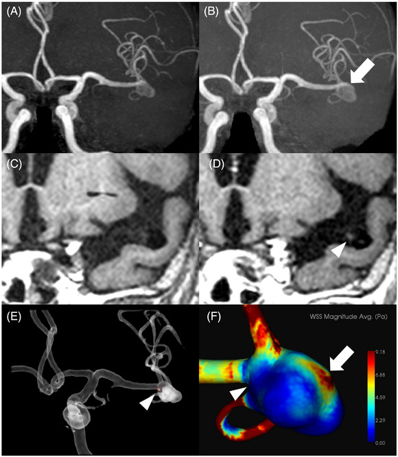
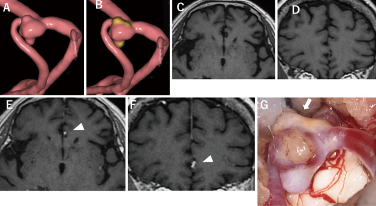

207 — Phình mạch nội sọ chưa vỡ: PHASES/ELAPSS/UIATS + ngấm thành trên HR-vwMRI và quyết định điều trị / Unruptured intracranial aneurysm: risk scores, wall enhancement and the treatment decision
Tags: pattern:phinh-mach pattern:ngam-thanh-mach vung:mach-nao score:PHASES score:ELAPSS score:UIATS protocol:CTA-co protocol:HR-vwMRI protocol:DSA incidentaloma:phinh-nao
Mức chắc chắn (certainty): tổng hợp y văn (literature synthesis) — bảng điểm lấy nguyên văn từ bài tổng quan toàn văn mở (PMC12778449: PHASES/ELAPSS/UIATS), số liệu ngấm thành từ nghiên cứu tiến cứu 114 túi phình (PMC12778726), phản biện hiệu lực điểm số từ 2 cohort (PMC12655681, PMC13545608). Ca trong quiz là ca nguyên văn, giữ đúng tuổi – giới – mô tả hình ảnh gốc.
Câu chốt: túi phình chưa vỡ không phải "chẩn đoán" mà là một quyết định: nguy cơ vỡ (kích thước × vị trí × tuổi/THA/tiền sử SAH/dân số) so với nguy cơ của can thiệp (biến chứng thần kinh thường > 5% ngay cả ở cohort hiện đại, PMC13545608). Điểm số chỉ là ngôn ngữ chung để hội chẩn, không phải bảng tra cứu mệnh lệnh — và ngấm thành mạch (AWE) chỉ là một mảnh ghép thêm vào quyết định, không đủ một mình để mổ.
1. Tổng quan bệnh học – cơ chế hình ảnh (TẠI SAO)
- Dịch tễ: phình mạch nội sọ (intracranial aneurysm) có ở 3–5% dân số trưởng thành; đa số không bao giờ vỡ, nhưng vỡ gây SAH với tỷ lệ tử vong/tàn phế cao — vì vậy mọi túi phình tình cờ đều phải phân tầng, không phải "cứ thấy là mổ" (PMC12655681).
- Bệnh học thành túi phình: mất lớp đàn hồi trong (internal elastic lamina), giảm và thoái hoá tế bào cơ trơn, thâm nhiễm đại thực bào/lympho, thành mỏng dần ở đáy túi. Đó là lý do đáy túi là nơi hay có bleb/núm con (daughter sac) và là nơi vỡ.
- TẠI SAO kích thước lại quan trọng đến vậy — định luật Laplace: sức căng thành T ∝ P × r (với thành mỏng, chính xác hơn là T = P·r / 2t). Bán kính tăng gấp đôi → sức căng gấp đôi; thành mỏng thêm → tăng lần nữa. Vì thế nguy cơ tăng phi tuyến: túi < 7 mm = 0 điểm, 7,0–9,9 mm = 3 điểm, 10,0–19,9 mm = 6 điểm, ≥ 20 mm = 10 điểm trong PHASES (PMC12778449).
- TẠI SAO vị trí quan trọng: thành mạch ở chạc ba và đoạn có nhánh xiên mỏng hơn, chịu lực cắt thành (wall shear stress — WSS) và áp lực va đập lớn hơn. PHASES cho ICA 0 điểm, MCA 2 điểm, ACA/PCom/tuần hoàn sau 4 điểm — phản ánh đúng nguy cơ vỡ cao hơn của ACom, PCom và tuần hoàn sau.
- TẠI SAO ngấm thành mạch (AWE) = dấu hiệu bất ổn: viêm thành → tăng tính thấm nội mô + tân mạch vasa vasorum → gadolinium rò vào thành và giữ lại; chuỗi 3D T1 "máu đen" (black-blood) triệt tín hiệu dòng chảy nên chỉ còn thành sáng. Ngấm khu trú (FAWE) = ổ viêm khu trú; ngấm chu vi (CAWE) thường đi cùng túi lớn/xơ vữa, ý nghĩa tiên lượng kém đồng nhất hơn (PMC12778726).
- Số liệu then chốt của AWE (114 túi phình chưa vỡ, theo dõi trung vị 34 tháng):
- 13/114 (11,4%) túi lớn lên; 4 túi vỡ — cả 4 đều có FAWE.
- FAWE là yếu tố độc lập dự báo lớn túi: HR 4,59 (95% CI 1,29–16,3); phân tích đơn biến HR 6,83 (2,15–21,7) (PMC12778726).
- 70/76 (92%) túi không ngấm thì ổn định trong thời gian theo dõi.
- Ở nhóm lớn túi: FAWE hình thành bleb 6/7 (86%) so với 1/6 (17%) ở nhóm không ngấm; thời gian từ VWI đến lúc lớn 16 ± 9,2 tháng (FAWE) so với 38 ± 17 tháng (không ngấm) (PMC12778726).
- Điểm vỡ lại nằm ở vùng KHÔNG ngấm, nơi WSS cao → AWE báo "túi đang bất ổn", không phải bản đồ vị trí sẽ vỡ (PMC12778726).
- TẠI SAO không được tin tuyệt đối vào điểm số — bằng chứng phản biện:
- Cohort 180 túi phình (103 đã vỡ): PHASES 1,6% ở cả nhóm vỡ và không vỡ; ELAPSS 5 năm 22,6% vs 20,0% (không khác biệt); UIATS lại thiên về bảo tồn ở 56,3% số túi đã vỡ; tuổi là yếu tố độc lập duy nhất (OR 1,05/năm) (PMC12655681).
- > 50% túi đã vỡ có kích thước < 6 mm, và 79% ca vỡ có PHASES < 5 — tức "nguy cơ thấp" theo bảng điểm (PMC13545608).
- Kết luận thực hành: điểm số + hình thái + AWE + nguyện vọng/tuổi thọ + nguy cơ can thiệp → hội chẩn đa chuyên khoa; không có ngưỡng mm nào tự động quyết định mổ.
2. Mẫu hình + chẩn đoán phân biệt theo vị trí & hình thái (Gamut)
- Theo hình thái:
- Túi phình dạng túi (saccular) — phổ biến nhất, có cổ, ở chạc ba.
- Bleb/núm con, thuỳ (lobulation) — dấu hiệu thành mỏng khu trú, làm tăng nguy cơ dù kích thước nhỏ.
- Phình dạng thoi (fusiform) và phình bóc tách (dissecting) — không có cổ, xử trí khác (stent/flow diverter, không coil đơn thuần).
- Blood blister aneurysm — thành rất mỏng, dễ vỡ khi can thiệp; ưu tiên flow diverter/bọc.
- Phình nhiễm trùng (mycotic) — thành viêm, hình túi không điển hình, thường ở đoạn xa, cần kháng sinh dài.
- Theo vị trí (dùng đúng trọng số PHASES):
- ACom — hay gặp nhất, nguy cơ vỡ cao, dễ nhầm với dị tật cửa sổ (fenestration).
- PCom — túi chạm dây III gây liệt dây III đau = túi có triệu chứng, nguy cơ cao, không chờ.
- Chạc ba MCA, ICA đoạn mắt/đoạn PCom, đỉnh nền (basilar tip), PICA.
- Tuần hoàn sau có nguy cơ vỡ cao hơn cùng kích thước → 4 điểm.
- Theo kích thước (ngưỡng để nói chuyện, không phải ngưỡng mổ): < 5 mm · 5–6,9 mm · 7–9,9 mm · 10–19,9 mm · ≥ 20 mm.
- Theo hình thái nguy cơ cao trong UIATS: túi không đều/lobulated, tỷ số kích thước (size ratio) > 3, tỷ số dài/rộng (aspect ratio) > 1,6 (PMC8976821).
- Theo bối cảnh phát hiện: tình cờ · đau đầu/liệt dây III (có triệu chứng) · đa túi phình (SUAVe: đa túi làm tăng nguy cơ vỡ, PMC12778449) · tiền sử SAH do túi khác (+1 điểm PHASES) · tiền sử gia đình (yếu tố quyết định mạnh nhưng không nằm trong PHASES).
3. Bảng so sánh phân biệt (ma trận đối chiếu)
| Thực thể (entity) | Hình ảnh điển hình (CTA/MRA/DSA) | Chốt vào (rule-in) | Chốt loại (rule-out) | Gợi ý xác nhận |
|---|---|---|---|---|
| Túi phình thật (saccular) | Túi có cổ rõ, thành liên tục với lòng mạch, thường ở chạc ba | Cổ + túi + dòng chảy vào túi thì động mạch | Mạch đi xuyên qua "túi" → không phải túi | CTA ≤ 1 mm, DSA 3D |
| Infundibulum (phễu) | Hình nón ≤ 3 mm ở gốc nhánh (thường PCom), không có cổ, mạch nhánh đi ra từ đỉnh nón | Nón, đối xứng, nhánh xuất phát từ đỉnh | Có cổ + đáy túi lệch trục → túi thật | DSA 3D + so phim cũ |
| Dị tật cửa sổ ACom (fenestration) | Hai ống ACom tách–nhập, vùng "trống" ở giữa, không có thành túi | Thấy 2 kênh chảy song song trên 3D | Một kênh + túi bên cạnh → túi thật | DSA 3D xoay, CTA mỏng |
| Vòng mạch/giả tổn thương do dòng chảy | "Túi" chỉ thấy trên một thì/bình diện, mất khi xoay hoặc chụp lại | Mất ở bình diện khác | Cố định mọi bình diện → tổn thương thật | CTA + MRA đối chiếu |
| Phình đã huyết khối toàn bộ | Khối quanh mạch, không có dòng vào trên CTA/DSA | Không ngấm/dòng vào, có viền canxi | Có dòng vào → phình chưa huyết khối | MRI T1 (máu cũ), DSA |
| Phình nhiễm trùng (mycotic) | Túi không điển hình, đoạn xa, thành dày viêm, có thể đa ổ | Sốt + cấy máu (+) + túi mới | Túi điển hình ở chạc ba, không nhiễm → phình thường | CTA + cấy máu + PET nếu cần |
| Túi "dòng chảy" cạnh AVM | Phình ở nhánh nuôi AVM, kèm nidus/shunt | Thấy AVM + shunt sớm | Không có nidus → phình đơn thuần | DSA có thì sớm |
- Bảng quyết định (không phải bảng chẩn đoán): ngấm thành khu trú + túi lớn lên hoặc bleb mới = tín hiệu bất ổn; ngấm chu vi lan toả + xơ vữa thành có thể chỉ là phản ứng lành (xem mục 5 và ca 2).

(A, B) MRA túi phình MCA trái ở nam 73 tuổi — sau 1 năm xuất hiện bleb (mũi tên). (C, D) HR-vwMRI trước và sau gadolinium: ngấm khu trú (FAWE) ở vùng cổ túi (đầu mũi tên). (E) Fusion MRA + VWI. (F) Bản đồ WSS: túi lớn thêm ở vùng KHÔNG ngấm, WSS cao (mũi tên), còn vùng ngấm thì không đổi hình thái. Nguồn: Hashimoto Y et al., Stroke Vasc Interv Neurol 2023 (PMC12778726), Fig. 3, CC BY-NC 4.0.4. Protocol chụp + hệ phân độ/điểm chuẩn hoá
4.1 Chụp gì, khi nào
- CTA động mạch nội sọ, lát ≤ 1 mm, dựng MPR/3D: khảo sát đầu tay khi nghi/tình cờ; đánh giá cổ, bleb, canxi hoá, nhánh xuất phát.
- MRA TOF 3D (1,5T hoặc 3T) khi cần theo dõi không xạ; đối chiếu cùng bình diện với phim cũ để đo đúng trục.
- DSA 3D xoay là chuẩn vàng khi CTA/MRA không chốt (infundibulum vs túi, cửa sổ ACom) và trước can thiệp.
- HR-vwMRI 3D T1 black-blood ± gadolinium (xem bài 241): chỉ đọc khi so sánh trước/sau tiêm cùng vị trí, phân loại NAWE / FAWE / CAWE.
- Theo dõi: trong nghiên cứu tiến cứu nêu trên, MRA mỗi 6 hoặc 12 tháng; "lớn túi" định nghĩa là tăng > 1 mm ở bất kỳ hướng nào hoặc thay đổi hình thái rõ (bleb mới) (PMC12778726).
4.2 PHASES — nguy cơ vỡ 5 năm (Greving 2014; bảng nguyên văn PMC12778449)
| Biến số | Nhóm | Điểm |
|---|---|---|
| Dân số (population) | Bắc Mỹ/châu Âu (không Phần Lan) | 0 |
| Nhật | 3 | |
| Phần Lan | 5 | |
| Tăng huyết áp | Không / Có | 0 / 1 |
| Tuổi | < 70 / ≥ 70 | 0 / 1 |
| Kích thước túi | < 7,0 mm | 0 |
| 7,0–9,9 mm | 3 | |
| 10,0–19,9 mm | 6 | |
| ≥ 20,0 mm | 10 | |
| SAH trước đó do túi khác | Không / Có | 0 / 1 |
| Vị trí | ICA | 0 |
| MCA | 2 | |
| ACA/PCom/tuần hoàn sau | 4 |
| Tổng điểm PHASES | Nguy cơ vỡ 5 năm |
|---|---|
| ≤ 2 | 0,4% |
| 3 | 0,7% |
| 4 | 0,9% |
| 5 | 1,3% |
| 6 | 1,7% |
| 7 | 2,4% |
| 8 | 3,2% |
| 9 | 4,3% |
| 10 | 5,3% |
| 11 | 7,2% |
| ≥ 12 | 17,8% |
4.3 ELAPSS — nguy cơ lớn túi 3 và 5 năm (Backes 2017; bảng nguyên văn PMC12778449)
| Biến số | Nhóm | Điểm |
|---|---|---|
| SAH trước đó | Có / Không | 0 / 1 |
| Vị trí | ICA 0 · ACA/ACom 0 · MCA 3 · PCom/tuần hoàn sau 5 | |
| Tuổi | > 60 tuổi: +1 cho mỗi 5 năm | |
| Dân số | Tham chiếu 0 · Nhật 1 · Phần Lan 7 | |
| Kích thước | 1,0–2,9 mm 0 · 3,0–4,9 mm 4 · 5,0–6,9 mm 10 · 7,0–9,9 mm 13 · ≥ 10 mm 22 | |
| Hình dạng | Đều 0 · Không đều 4 |
| Tổng điểm ELAPSS | Lớn túi 3 năm (5 năm) |
|---|---|
| < 5 | 5% (8,4%) |
| 5–9 | 7,8% (13%) |
| 10–14 | 11,7% (19,3%) |
| 15–19 | 17,5% (28,1%) |
| 20–24 | 25,8% (39,9%) |
| ≥ 25 | 42,7% (60,8%) |
4.4 UIATS — điểm "điều trị vs bảo tồn" (29 biến số, đồng thuận Delphi)
- Cộng điểm nhóm ủng hộ điều trị và nhóm ủng hộ bảo tồn; hiệu số ≥ 3 điểm mới tạo ra khuyến cáo (điều trị hoặc bảo tồn); hiệu số ≤ 2 điểm = không kết luận, quyết định theo từng ca (PMC12778449).
- Vì UIATS là ý kiến chuyên gia, không phải mô hình tiên lượng: cohort thực tế cho thấy UIATS khuyên bảo tồn ở 56,3% túi đã vỡ (PMC12655681) → dùng để cấu trúc cuộc hội chẩn, không dùng để "chấm điểm rồi thôi".
4.5 Thuật toán (tóm tắt để hội chẩn, không thay hướng dẫn)
flowchart TD
A[Túi phình chưa vỡ tình cờ] --> B[Đo kích thước, xác định vị trí, tìm bleb và túi thứ hai]
B --> C[Tính PHASES và ELAPSS]
C --> D{Có yếu tố nguy cơ cao?}
D -->|Có triệu chứng, bleb mới, túi lớn lên| E[Hội chẩn ưu tiên can thiệp]
D -->|Không| F[HR-vwMRI ± theo dõi MRA 6-12 tháng]
F --> G{FAWE hoặc túi tăng trên 1 mm}
G -->|Có| E
G -->|Không| H[Tiếp tục theo dõi, đánh giá lại nguy cơ can thiệp]
E --> I[Chọn coil, stent, flow diverter hay clip theo cổ và vị trí]
5. Biến thể bình thường và cạm bẫy
- Infundibulum ở gốc PCom — "túi" nhỏ ≤ 3 mm, hình nón, không có cổ, nhánh mắt/PCom xuất phát từ đỉnh. Đây là biến thể bình thường, không phải túi phình; đừng đưa bệnh nhân vào lịch theo dõi suốt đời chỉ vì một phễu mạch.
- Dị tật cửa sổ ACom — dòng chảy chia đôi tạo "khoảng trống" giả túi; trên CTA một bình diện có thể trông như túi. Luôn xoay 3D/DSA trước khi kết luận.
- AWE không đặc hiệu cho "viêm cấp" — ca 2 dưới đây: ngấm toàn bộ túi trên VWI, mổ ra là biến đổi xơ vữa (thành dày, ngấm thuốc). Ngấm đều, lan toả thường phản ánh xơ vữa/tái cấu trúc; ngấm khu trú ở đáy/bleb đáng lo hơn. Đừng biến "AWE +" thành chỉ định mổ.
- Ngấm sau can thiệp — sau coil/stent/clip, thành ngấm do phản ứng viêm–lành trong nhiều tháng; không đọc AWE như dấu hiệu tái phát nếu chưa so với phim nền.
- Bẫy "nhỏ là lành" — hơn nửa số túi vỡ có kích thước < 6 mm (PMC13545608); túi nhỏ ở ACom/PCom hoặc có bleb vẫn có thể vỡ. Đừng dừng ở câu "dưới 7 mm nên theo dõi".
- Satisfaction of search — thấy một túi rồi dừng: đa túi phình làm tăng nguy cơ vỡ (SUAVe, PMC12778449); phải đọc toàn bộ các nhánh trên CTA/DSA 3D và ghi rõ túi nào đang được theo dõi.
- Bẫy thời gian của điểm số — PHASES/ELAPSS được xây trên quần thể chọn lọc, có crossover điều trị (ISUIA: 32% bệnh nhân chuyển sang can thiệp, làm giảm nguy cơ vỡ quan sát được) (PMC13196851). Vì vậy dùng điểm số để so sánh tương đối, không để hứa "nguy cơ 0,4%".
6. Tự lượng giá — Blind Quiz ngay trên trang tĩnh
Ca 1 — Nam 73 tuổi, túi phình MCA trái tình cờ. Nhìn 2 hàng ảnh, mô tả trước khi mở đáp án.
- Gợi ý lâm sàng: không triệu chứng; theo dõi MRA 6–12 tháng.
- Câu hỏi: (1) Có gì thay đổi giữa A và B? (2) D và C khác nhau ở đâu, ngấm khu trú hay chu vi? (3) Vùng nào lớn lên và vì sao điều đó lại nghịch lý với "vùng ngấm"?
Bấm để hiện đáp án (findings + chẩn đoán)
- Findings: sau 1 năm, túi xuất hiện bleb ở đáy (mũi tên ở B). Trên HR-vwMRI sau gadolinium (D so với C), có ngấm khu trú (FAWE) ở vùng cổ túi (đầu mũi tên). Fusion MRA–VWI (E) xác nhận đúng vị trí ngấm. Bản đồ WSS (F) cho thấy túi lớn thêm ở vùng KHÔNG ngấm, nơi WSS cao.
- Chẩn đoán: túi phình đang bất ổn (FAWE + bleb mới + lớn túi) → cần hội chẩn can thiệp. FAWE = ổ viêm thành khu trú; nhưng điểm vỡ/lớn lại ở vùng không ngấm → ngấm thành phản ánh tình trạng viêm toàn túi, không phải "chỗ sắp vỡ".
- Phản biện (bắt buộc): đây là một ca minh hoạ trong loạt 114 túi; FAWE có HR 4,59 nhưng khoảng tin cậy rộng (1,29–16,3) và không đủ một mình để mổ. CAWE trong loạt này không lớn trong thời gian theo dõi ngắn (trung vị 14 tháng) — chưa đủ dữ liệu để kết luận CAWE lành.
- Nguồn: Hashimoto Y et al., Stroke Vasc Interv Neurol 2023 (PMC12778726), Fig. 3, CC BY-NC 4.0.
Ca 2 — Túi phình MCA phải đang lớn dần (Apo A1 113 mg/dL, dưới trung bình). Ảnh gồm DSA 3D, VWI trước/sau tiêm và ảnh trong mổ. Ngấm thành có đồng nghĩa "phải mổ ngay"?

- Gợi ý: túi phình MCA phải được đánh giá trước can thiệp.
- Câu hỏi: (1) Ngấm thành ở đâu, kiểu gì? (2) Ảnh mổ (G) cho thấy gì? (3) "AWE dương tính" một mình có đủ chỉ định mổ?
Bấm để hiện đáp án (findings + chẩn đoán)
- Findings: DSA 3D (A) và fusion với VWI (B) định vị túi MCA phải. VWI axial/coronal trước tiêm (C, D) và sau tiêm (E, F): ngấm toàn bộ thành túi (whole-sac AWE) (arrowhead). Trong mổ (G): biến đổi xơ vữa (atherosclerotic change) trên thành túi (mũi tên).
- Chẩn đoán: túi phình lớn dần có AWE toàn bộ — trên mô học là tái cấu trúc xơ vữa, thành dày, không phải ổ viêm cấp. Nghiên cứu nguồn (156 túi phình, AWE 36,5%) cho thấy AWE độc lập với tuổi (OR 1,05/năm), nam (OR 3,83), đường kính (OR 1,19/mm), hình không đều (OR 5,01) và Apo A1 thấp (OR 0,97 mỗi mg/dL) — tức AWE là dấu hiệu thoái hoá/xơ vữa thành, không đồng nghĩa "đang viêm cấp".
- Bài học cốt lõi: AWE không phải "chỉ điểm mổ". Thành dày xơ vữa ngấm thuốc nhưng bền hơn, trong khi thành mỏng NGAY CẠNH vùng ngấm mới là chỗ dễ vỡ — khớp với ca 1 (điểm lớn/vỡ ở vùng không ngấm, WSS cao). Vì vậy phải đọc kiểu ngấm + vùng lân cận + kích thước/theo dõi, không đọc "có/không ngấm".
- Phản biện: nghiên cứu nguồn là hồi cứu, một trung tâm, 44% ca theo dõi có lớn túi vì chọn nhiều ca chỉ định can thiệp; AWE không là yếu tố độc lập dự báo lớn túi khi đã hiệu chỉnh (OR 1,72; 0,58–5,09) — đừng thổi phồng giá trị tiên lượng của AWE.
- Nguồn: Hosogai M et al., Neurol Med Chir (Tokyo) 2025;65:340–347 (PMC12412027), Fig. 1, CC BY-NC-ND 4.0 — ảnh dùng nguyên bản, không cắt/ghép.
Bài liên quan chéo
- 200 – Tổng quan hệ Thần kinh
- 210 – Giải phẫu sọ não
- 212 – Xuất huyết dưới nhện (hậu quả của vỡ túi phình)
- 241 – Đọc HR-vwMRI thành mạch nội sọ (kỹ thuật + VWE 0–3)
- 248 – Can thiệp nội mạch giả phình/bóc tách mạch cổ
- 216 – Di dạng mạch & CVST
Ảnh
207_phinh-mach-nao_MRI-MRA_PMC12778726-Fig3-CCBYNC.jpg— Hashimoto Y et al., Stroke Vasc Interv Neurol 2023, Fig. 3, CC BY-NC 4.0.207_phinh-mach-nao_DSA-VWI_PMC12412027-Fig1-CCBYNCND.jpg— Hosogai M et al., Neurol Med Chir (Tokyo) 2025;65:340–347, Fig. 1, CC BY-NC-ND 4.0 (dùng nguyên bản).- Chi tiết giấy phép từng ảnh:
images/CREDITS.md.
Không dùng để chẩn đoán độc lập khi chưa có người hướng dẫn.